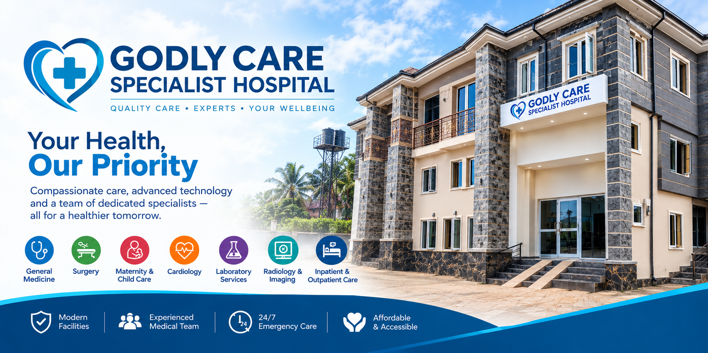

Godly Care Specialist Hospital is committed to delivering respectful, coordinated and quality-focused healthcare.
Godly Care Specialist Hospital is a multi-specialty private hospital in Okpuno Otolo(off Ezenwegbu Road), Nnewi. Our outpatient clinics, maternity and Obstetrics (ANC), Gynecology, General medical and laboratory Services and pharmacy sit under one roof, supported by a 24-hour emergency unit.
Over the past decade we have grown from a small clinic into a full hospital serving patients from Nnewi North and South, Oba, Ojoto, Ozubulu, Okija, Ihiala, Onitsha and beyond. What has not changed is the way we practise: take time, examine properly, explain clearly and follow up.

To provide accessible, compassionate and quality healthcare through skilled professionals and responsible clinical practice.
To be a trusted healthcare institution recognised for patient experience, clinical quality and community impact.
Compassion, integrity, safety, respect, teamwork and continuous improvement.